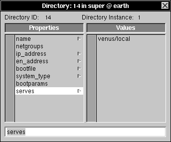

Release 3.3 Copyright ©1994 by NeXT Computer, Inc. All Rights Reserved.
| 10 | Configuring a Large Network | |
| If you have a large network, the basic configuration supplied by SimpleNetworkStarter probably won't be sufficient to meet your needs. Two features of large networks call for additional configuration. First, with a large number of computers (more than about 20 or 30), you may want to organize administrative information into multiple NetInfo domain levels to keep things more manageable. Second, large networks are frequently made up of several smaller physical networks distributed among different locations. This chapter describes how to set up a multilevel NetInfo domain hierarchy and how to configure a NetInfo network distributed among different locations. | ||
| Important: A small mistake made during the initial configuration of a large network can result in many hours of corrective work. Before beginning your work, read this chapter thoroughly, along with Chapter 1, "Using This Manual to Plan Your Network;" Chapter 2, "Setting Up a NetInfo Network;" and Chapter 3, "NetInfo Networking." Also see the Summer 1993 issue of In Focus magazine which is dedicated to the underpinnings of NetInfo, on line in the System Administrator's bookshelf. |
| Background |
| This section discusses how information searches are performed, how domains are identified, and how the NetInfo domain hierarchy is configured.
As you've already seen, each NEXTSTEP computer runs netinfod server processes for one or more NetInfo domains. Each domain is implemented by one or more databases that contain data in binary form. Each database has a tag name: the tag local denotes the database in /etc/netinfo/local.nidb and the tag network denotes the database in /etc/netinfo/network.nidb. A netinfod server provides access to the data in a particular database and runs in memory as a process with the database tag: thus netinfod local is the server providing access to the /etc/netinfo/local.nidb database and the netinfod network server provides access to the /etc/netinfo/network.nidb database. The data structure for any NetInfo database is that of a directory tree. Each directory may have properties (made up of keys and values), and each directory may have subdirectories. If a domain has multiple databases, only one is the master database, all others are clone databases which are copies of the master. The master database is specified by the master property in the root directory, which has as its key the word "master" and as its value the name of the computer and the tag of the database for the domain that is the master. In other words, the master property specifies the computer and database tag of the master database for a domain. The master database is the database to which changes are made. The clone databases are copies of the master, and the master database server for a domain updates the clones to match the current state of the master database. The domain name is almost always different from the tag names of the databases. Thus, because all databases of a domain are identical, it is simplest to think of the domain as having the directory and property structure. The local domain is served by the netinfod whose tag is local. The tag local is reserved for this use. Data searches in the NetInfo domain hierarchy begin with the domain tagged local. The domains are organized into a parent-child hierarchy of two or more levels. A two-level hierarchy has a root domain and one or more local domains. A three-level hierarchy has a root domain that has as its children one or more mid-level domains that have as their children one or more local domains at the bottom level. Client processes request information about network resources from domains. A particular netinfod server for that domain searches its database and responds if it can. Searches for information begin at the local domain and then pass up the hierarchy, stopping when the root domain has been searched. The secret to the relationship between domain parents and children is found in the subdirectories of the /machines directories, and the means of this relationship is binding.
Binding When a NEXTSTEP system boots, it starts up netinfod server processes for each database that is stored on that computer. Each netinfod server process links itself into the hierarchy of NetInfo domains. This process is called binding and is controlled by the serves property of host entries in the NetInfo /machines directory. As part of the boot procedure, the nibindd process starts up a netinfod process for each database in the /etc/netinfo directory. Then nibindd listens for requests from netinfod processes asking for parents. A request for a parent includes the Internet address of the computer running the requesting netinfod process as well as the tag of the requesting netinfod process and the tag of the parent. When nibindd gets such a request, it checks for a running netinfod with the specified parent tag. If there is no match, nibindd ignores the request. If it finds one, nibindd passes the request to the netinfod process with that tag. To see if it is indeed the requester's parent, the netinfod process checks the /machines directory of its domain for a subdirectory which has an Internet address and tag matching the requester. If there is no match, netinfod ignores the request. If it finds a match, it sends an acknowledging response to the computer running the requesting netinfod process. Note that binding is automatic for all local domains. The netinfod process for a local domain issues a request for a parent during its startup procedures. This is not true for upper-level domains. A netinfod process for a mid-level domain will issue a request to bind to a parent only in response to a request that it find its parent. Generally, such a request comes from the lookupd process as it handles searches up the domain hierarchy.
The serves Property In the subdirectories of the /machines directory the serves property contains information that netinfod processes use to contact other netinfod processes. The values of a serves property can record three types of relationships between servers: parents, children, and other servers for the same domain. Follow these steps to examine the various serves properties (if you don't yet have a network configured, just examine the local domain): |
| 1. | Start up NetInfoManager. | |
| 2. | In the local domain window, click /machines, then broadcasthost. Double-click broadcasthost to open the Directory window. | |
| 3. | Click serves. |
| Notice the value ../network. This means that the server for this domain can contact a server for the parent domain (..) by sending a message to whichever computer is described by this directory, looking for a netinfod network process. The requesting process will bind to the first server that replies to the request. |
| 4. | Click ip_address. |
| The value 255.255.255.255 is the broadcast address. Any messages sent to this address will be sent to all computers on the local network, including the computer that sends the message. See Appendix C, "Internet Addressing," for more information. |
| 5. | Close the Directory window and double-click localhost in the local domain window. Click serves in the Directory window. |
| Notice the value ./local. This indicates that the host localhost runs a server process for the current domain (.) with a database tagged local. |
| 6. | Click ip_address. |
| The value 127.0.0.1 is the loopback address. Any messages sent to this address will be handled by the local computer without being sent to the network. |
| 7. | Choose Open from the Domain menu and open the root domain. Click machines. | |
| 8. | Click the host name of the root domain server under the /machines directory, then double-click it to open the Directory window. | |
| 9. | Click serves. |
| The value ./network indicates that this computer runs a server process for the current domain (.) from a database tagged network. The value earth/local means that this host also runs a server process for the child domain earth from a database tagged local. Note that this child's domain name, earth, is relative to the name of the current domain. Because this domain is the root domain, the child domain here will be named /earth.
Note that the syntax of the values for the master property and the serves property appears identical, but the fields have different meanings. The syntax for the master property is hostname/databasetag, and the syntax for the serves property is domain/databasetag. |
| Important: The name of a domain is determined by the serves property of the host entry in the parent domain. By convention, local domains are given the same name as the computer serving the domain. For example, the name of the local domain for the computer named mars in the example network is called /mars.
Example master and serves Properties In an example two-level domain hierarchy, a computer named earth runs the master server for the root domain, and a computer named pluto runs a clone server for the root domain (a clone server provides read-only access to a domain). In this case, pluto stores and serves an exact copy of the root domain from a database tagged network. The master server of a domain is identified by the property master in the root (/) NetInfo directory of that domain. Here, the master property has the value earth/network (notice the tagged domain notation), indicating that the master is the NetInfo server with the database tagged network running on the computer named earth. The server with the tag network running on pluto can tell from this property that it is a clone server and that the server process with the tag network running on earth is the master. The values of the various serves properties identify the parent and children of the domains. The entries for broadcasthost and for localhost are identical in each local domain. The serves property for localhost indicates that it runs a server process for the current domain (.) with a database tagged local. The serves property for broadcasthost indicates that it runs a server process for the current domain's parent domain (..) with a database tagged network. The root domain contains host entries for each of the three computers. From these entries, you can see that mars runs a server process for the domain /mars with a database tagged local. The serves property for pluto indicates that it runs a server process for the domain /pluto with a database tagged local as well as running a server process for the current domain (.) from a database tagged network. The serves property for earth shows that it also runs a server process for the current domain with a database tagged network, as well as the domain /earth with the database tagged local. The master property indicates earth runs the master server of the current (root) domain, which means pluto must run a clone server.
netinfod Startup and Binding The following steps walk through the process of how NetInfo starts up and a server of a domain binds to a server of its parent domain. |
| 1. | As the computer boots, a line in /etc/rc starts the NetInfo binding daemon, nibindd. | |
| 2. | The nibindd process looks in /etc/netinfo for directories with names in the form tag.nidb. For each directory nibindd finds, it starts a netinfod process to serve data from the database. Each netinfod runs with an argument matching the tag for the NetInfo database it's serving. |
| For example, mars has a directory named /etc/netinfo/local.nidb, so a netinfod process is started with the tag local. |
| 3. | Each netinfod examines its /machines NetInfo directory for subdirectories that include a serves property with a value in the form ../tag. This value indicates that the host represented by this directory runs a server for the parent NetInfo domain (..) from a database named tag. |
| To continue the example, on the host mars, the entry /machines/broadcasthost has a serves property with the value ../network. It's the only entry with a value of the serves property in the form ../tag. |
| 4. | A special message called a bind request is sent to the Internet address associated with each /machines entry with an appropriate serves value (../tag). The bind request includes the sender's Internet address, the tag of the netinfod looking for its parent, and the tag of the parent domain server. |
| The value of the ip_address property for broadcasthost is 255.255.255.255 (the generic local broadcast address), so the bind request is broadcast to all the hosts on the local area network. |
| 5. | Each computer that receives the bind request passes it to nibindd, which checks to see if there is a netinfod running for the requested parent domain. If there is, the request is forwarded to the appropriate netinfod. |
| The nibindd processes on earth and pluto each find that there is, indeed, a netinfod process running for the tag network. The bind request is passed on to the netinfod network on each computer. |
| 6. | The receiving netinfod checks the /machines NetInfo directory for entries that have an ip_address property with a value that matches the sender's Internet address as well as a serves property with a value of the form domain/tag, where tag matches the tag of the netinfod looking for its parent. |
| The netinfod processes on both earth and pluto find the entry /machines/mars with an ip_address property that has a value matching the Internet address of mars. The host entry in each case also includes a serves property with the value mars/local; local matches the tag of the requestor (netinfod local). |
| 7. | If the receiving netinfod finds a host entry with appropriate values, a response is sent to the sender's Internet address indicating that the receiving computer can serve the parent domain. |
| The netinfod network processes on earth and pluto each send a response to netinfod local on mars indicating that they can serve the parent domain. |
| 8. | The netinfod looking for its parent binds to the first server to respond. |
| Assuming that the netinfod network process on earth was busy responding to other NetInfo requests, the netinfod network process on pluto might have responded first. In that case, the netinfod local on mars binds to the netinfod network on pluto as its parent domain server. |
| 9. | If the netinfod for a child domain later checks in with its parent domain server and the parent server doesn't respond within a specific period of time, the child once again sends a bind request. This is called "rebinding." |
| If the netinfod network on pluto doesn't respond quickly enough, the netinfod local on mars sends a new bind request, starting at step 3. |
| Planning |
| As with any endeavor, it's important to plan your network before beginning configuration. Chapters 1 and 2 of this manual present a broader list of considerations. Here are some things to consider when planning for a large network: |
| Equipment--If your network is made up of multiple physical networks (each called a subnet), you'll need additional equipment. Specifically, you'll need routers (or gateways) to route messages from one network to the next, and some kind of connection between routers. These connections might be, among other things, cables strung through the walls, buried fiber-optic cables between buildings, or dedicated phone lines leased from your phone company. See Chapter 1 for more information. | ||
| Addresses--Make sure you have an appropriate network address. It's highly recommended that you register your address and Internet Domain name with the Network Information Center. If you'll be using subnets, decide on a subnet mask and assign a network address to each subnet. For more information on obtaining a network address and subnetting, see Appendix C, "Internet Addressing." | ||
| NetInfo Domains--Decide if you need a three-level domain hierarchy, or if you need one with even more levels (more than three levels is rarely necessary). Choose a name for each midlevel domain, then decide on which computers to put master and clone servers for each domain. Decide in which domain user accounts, aliases, NFS mounts, and other administrative information should be stored. If you'll be using subnets, you'll probably want a domain for each subnet. |
| Considerations for Subnets |
| If your network is configured using subnets, several points to consider are: |
| Broadcast messages aren't passed on by routers. Because NEXTSTEP systems get their host name and Internet address at boot time by sending a broadcast message, make sure that each subnet has a configuration server. See "Creating New Midlevel Domains" later in this chapter. | ||
| Information requests to the root domain can be frequent, and traffic over the router is slower than local traffic. It's a good idea to have a clone server for the root domain in each subnet. See "Creating Clone Servers" later in this chapter. | ||
| If you have configured network time service (and you should), consider having a clone time server in each subnet. You can have the midlevel domain server be the clone time server as well. For details, see Chapter 3. |
| Previewing the Result |
| When you set up a multilevel domain hierarchy, the most critical aspect is the location and values of host entries and serves properties in the immediate subdirectories of the /machines directory for each domain. Five critical rules that you must follow when you create your new hierarchy are: |
| Each domain must, in its /machines directory, have host entries for the computers that run NetInfo server processes for each of its children. Each host entry must have a serves property with the value domain/tag, where domain is the name of the child domain and tag is the tag of the child server process' database. | ||
| Each domain must have a host entry for the computers that run NetInfo servers for its parent domain. These host entries must have a serves property with the value ../tag, where tag is the tag of the parent server's database. If there are any clone servers for the parent domain, there must be an entry for each clone server as well as for the master (unless broadcasthost is used to identify the parent domain servers). | ||
| Each domain must have a host entry for each server (master or clone) of the domain. These host entries must have a serves property with the value ./tag, where tag is the tag of the current domain database. | ||
| If a domain has host entries for computers that don't run NetInfo servers for the parent domain, for a child domain, or for this domain, then the host entries must not include the serves property. Inappropriate serves properties can cause a server to bind to the wrong parent or not bind at all. | ||
| In order for your hosts to communicate with each other, they must each have access to host entries for the other computers. The root domain should have a host entry for each computer on the network. Except for midlevel and root domain servers, these host entries must not have a serves property. |
| Another way to state these rules is: in the host entries of the /machines directory of any given domain, there should only be serves properties for the parent domain (../tag), the current domain (./tag), and the children of the current domain (domain/tag). The root domain doesn't have a parent, and local domains don't have children. |
| Information Access |
| Each domain has exactly one parent (except the root domain) and zero or more children.
Any given computer has access to the information stored in its local domain (the lowest level), the root domain (the highest level), and all intervening domains between the local domain and the root domain. When a process requests information from NetInfo, the search begins in the local domain, then continues up the domain hierarchy until the information is found or the root domain is reached. If no information is in any domain, the search ends. Note that the search does not extend down from the root into parallel branches. For example, when a user attempts to log into a computer, the loginwindow process makes a request, searching for the account information for the user. The local domain is searched first. If the account isn't found there, the search continues in the domain that is the parent, one level above the local domain. If the account isn't found there, the search continues in the next higher domain, and so on up to the highest level domain (the root domain). If the user's account information is found in any domain, the NetInfo search ends. |
| From Two to Three Domain Levels |
| This section discusses the task of combining two small two-level networks into a single three-level network. The diagrams show domain relationships. The tables detail the relevant properties in the root directory and /machines subdirectories.
Two Two-Level Networks The following diagram shows two (very small) two-domain level networks of three computers each. Names in the boxes are domain names. |
| The following table shows the master properties for the root directories and shows the name, serves, and ip_address properties for the /machines directories for each root domain in the figure. |
| The network of mercury, venus, and earth is composed of the three local domains for each computer (/mercury, /venus, and /earth) with its top-level domain tagged network on earth (i.e., the root domain is instantiated by the /etc/netinfo/network.nidb database on earth). Similarly, the network of mars, jupiter, and saturn is composed of local domains for each computer (/mars, /jupiter, and /saturn) with its top-level domain tagged network on mars (i.e., the root domain is instantiated by the /etc/netinfo/network.nidb database on mars).
One Three-Level Network The following diagram shows the same computers as in the previous diagram. However, they have now been merged into a single three-level domain hierarchy. |
| The new network retains the local domains on all computers, retains the databases tagged network on earth and mars (renaming those domains as /admin and /sales, respectively), and adds a new top-level domain tagged solar (running the master on earth and a clone on mars). Thus all computers store /etc/netinfo/local.nidb databases, and mars and earth additionally store /etc/netinfo/network.nidb as well as /etc/netinfo/solar.nidb databases.
To accomplish the transformation, as system administrator you can ignore all the local domains, but you have to modify some of the subdirectories of the /machines directory (the serves properties) of the mid-level domains. (In addition, you should move all users to the root domain and consider specifying other resources such as printers and fax modems in the root domain as well.) The following sections explore these aspects in more detail.
Directories of the New Root Domain The following table presents the salient directories and their properties for the root domain for the new network configuration. |
| The master property shows that the netinfod solar process on earth is the master NetInfo server for the root domain.
The /machines directory of the root domain contains subdirectories for all computers comprising the network. Each subdirectory of the /machines directory contains properties that are used to structure the network: the name, the ip_address, and the serves properties.
The name and ip_address Properties Each subdirectory of the /machines directory specifies the computer name as the value of its name property as well as the computer's Internet address as the value of its ip_address property. Entering appropriate values for these properties is how you, the system administrator, bestow a name and Internet address on a computer. A netinfod process requesting access to a computer looks in the /machines directory for a subdirectory with a matching name. The name property of that subdirectory provides that value (the name property value jupiter specifies the /machines/jupiter subdirectory). Within the subdirectory for a computer, the ip_address property value provides the Internet address for the computer, which the netinfod process uses for its communication (thus netinfod associates the name value jupiter with the ip_address value 192.42.172.66).
The serves Property of the /machines Subdirectories The serves property in a subdirectory of the /machines directory provides domain relationship information. The general form for the value of the serves property is domain_name/database_tag. This syntax associates the domain name with a particular database. The fact that a particular serves property is in a particular subdirectory of the /machines directory associates the domain (and its database instance) with a particular computer. Using the relative directory naming conventions of UNIX, the . domain specifies the current domain and the .. domain specifies the parent of the current domain. Thus the serves property value ./solar associates the /etc/netinfo/solar.nidb database with the current domain. If a text string other than . or .. is specified for the domain name, the syntax identifies that string as the domain name for a child of the current domain. Thus the serves property value admin/network specifies that a netinfod server with a tag network runs on the associated computer, providing information for the child domain admin. That the /machines/earth subdirectory has a serves property with two values, ./solar and admin/network, specifies that there are two netinfod processes running on the computer earth: netinfod solar for the current (root) domain and netinfod network for the admin domain (a child of the root domain, specified absolutely as the /admin domain). Note that there is no mechanism for specifying a grandchild or a grandparent domain (nor is there a need to).
Summary and Review Putting things together, the master property of the root directory specifies a computer name and database tag for the master NetInfo server of that domain. This distinguishes the one, true master from any clone servers for the same domain running on other computers. The subdirectories of the /machines directory associate a computer name and a particular Internet address and any information about netinfod servers running for parent, current, or child domains. For this example, in the root directory of the root domain, the master property with the value earth/super specifies that for this domain the master NetInfo server is netinfod super running on the computer named earth. The /machines/earth subdirectory associates the name property value earth with the ip_address property value 192.42.172.2. The serves values ./super and admin/network specify that on earth the netinfod super process serves the current domain and the netinfod network process serves the admin domain. The /machines/mars subdirectory associates the name property value mars with the ip_address property value 192.42.172.65. The serves values ./super and sales/network specify that on mars the netinfod super process serves the current domain and the netinfod network process serves the sales domain. The serves properties show that earth and mars both run servers of the root domain. mars runs a clone server for the root domain (the /etc/netinfo/solar.nidb database on earth is read/write and the /etc/netinfo/solar.nidb database on mars is read only). earth and mars also both run servers for the children of the root domain, /admin and /sales, respectively; the processes are netinfod network in both cases. The fact that the other subdirectories of the /machines directory don't have serves properties simply means that any netinfod processes running on those computers do not have a parent, current, or child relationship to this domain. You cannot infer any other domain information (though in fact, you can be reasonably sure the those computers are running netinfod local processes). Again, the syntax for the serves property allows you to specify a parent, current, or child domain only. As this domain is the root domain, it has no parent, and any local domains exist below the child level of this (current) domain, so they cannot be specified in this domain.
The /admin and /sales Domains Now that a new root domain has merged the /admin and /sales domains into a single network, what has changed in these domains? The following tables show salient directories and properties for the /admin and the /sales domains for the new network. Remember that the /admin domain governs the computers earth, mercury, and venus and that the /sales domain governs the computers mars, jupiter, and saturn. |
| The master Property of the /admin Domain
The root directory for the /admin domain has a master property showing that the master NetInfo server for the /admin domain is the netinfod network process running on earth, which is the same NetInfo server that had formerly served one of the root domains before the merger.
The /machines Subdirectories Each subdirectory of the /machines directory has a name and ip_address property to specify a particular computer as well as serves properties with at least one value. Examining the differences in the serves property values reveals the local domains as well as the hierarchical relationships for all domains of the network.
The serves Properties The /machines/earth subdirectory shows that the computer earth runs three netinfod processes. The ../solar value means that a netinfod solar process serves the parent of the current domain. The ./network value means that a netinfod network process serves the current domain, i.e., the /admin domain. The earth/local value means that a netinfod local process serves the child domain, i.e., the earth domain (specified absolutely as the /admin/earth domain). Note: Again, the syntax of the serves property's value is domain_name/database_tag where the domain_name is expressed relative to the current domain: the parent domain is the .. domain, the current domain is the . domain, and a child domain is expressed by a text string, in this case "earth". Specifying a name for the domain_name is the way you name the domain. Note: Generally the name for a computer matches the domain name for the netinfod local for that computer. Although we strongly discourage this practice to avoid confusion, you can mismatch the names. An example would be setting a name property value of neptune and a serves property value of uranus/local to create a /machines/neptune subdirectory for a computer running a netinfod local process serving the uranus domain. The /machines/mars subdirectory shows only the ../solar value for its serves property. Remember that the computer named mars is not a member of the /admin domain. The reason for including it here is to ensure that computers in the /admin domain can find either parent (the netinfod solar process running either on earth or on mars). The /machines/venus subdirectory has for its name property the value of venus. Its serves property has the value of venus/local. Thus the computer named venus runs a netinfod local process for the /admin/venus domain. Similarly the name property of mercury names the /machines/mercury subdirectory for a computer with an Internet address of 192.42.172.3 that runs a netinfod local process for the /admin/mercury domain.
Comparing the /admin and /sales Domains You can examine the /sales domain to see the same relationships that exist in the /admin domain, with some interesting observations. The master property of the root directory of the /sales domain has as its value mars/network which specifies a computer named mars running a netinfod network process as the master NetInfo server for the /sales domain. The /machines/mars subdirectory names mars at 192.42.172.65 as running a netinfod solar process for the parent domain. Note: There is no way to tell at this level whether earth or mars runs the master NetInfo server for the root domain -- you'll have to inspect the root directory of the root domain to see the value of its master property. The /machines/earth subdirectory names earth at 192.42.172.3 as running a netinfod solar process for the parent domain. While earth is not a member of the /sales domain, it runs a server for the parent domain (which we know to be the root domain of the network), and its entry ensures that processes requesting information from the parent domain may find what they need either from the netinfod solar process running on mars or from the netinfod solar process running on earth. The /machines/jupiter and the /machines/saturn subdirectories show that a computer named jupiter at 192.42.172.66 runs a netinfod local process for the /sales/jupiter domain and that a computer named saturn at 192.42.172.67 runs a netinfod local process for the /sales/saturn domain. To illustrate the search pattern, a search originating with a process on jupiter first looks at the /sales/jupiter domain. Failing there it looks in the /sales domain. Failing there it looks in the / domain. Failing there, the search fails. Never does the search extend to the /admin domain or the child domains of the /admin domain. Thus the children of the two domains are isolated from each other, the benefit being security and appropriate resource allocation. Note: Nowhere in the /admin or in the /sales domains do the strings "admin" or "sales" exist. Each domain gets its name from its parent domain, in this case the root domain. If you check the root domain, you'll find the source in the /machines/earth and the /machines/mars subdirectories with serves property values for admin/network and sales/network.
Migrating Resources to the New Root Domain This example network is pretty small. Originally it had been two separate networks, each with three computers (and probably three or four users each). The new network merges the two networks, with the benefits of shared resources such as email, file sharing, printer sharing, and so on. A NetInfo network provides an important additional benefit -- uniformity. If you leave all other aspects of the domains alone, you won't make use of the new possibilities. Consider moving the users' account information from their original domains to the root domain. This entails moving user account information (with UserManager) from the /admin and the /sales domains (the /etc/netinfo/network.nidb databases) to the root domain (the /etc/netinfo/solar.nidb database). Remember, when a user logs in, the login verification (loginwindow) process searches the local domain, then the mid-level domain, then the root domain. If some users have account information in the /admin domain, they won't be able to log into a computer in the /sales domain, for the search will move up from the local domain to the /sales domain to the root domain but will not search down the /admin branch. Users with account information in the root domain will be able to log in to any computer and access their home directories on the home directory server. This uniform network feature can be extremely useful on a network scattered over several sites (some NetInfo networks include several thousand seats in domains all over the world). You may also want to specify printers, fax-modems, and other resources in the root domain rather than in the /admin or /sales domains. Users, printers, and other resources specified in the root domain are accessible throughout the network and have the benefit of the clone backup on mars (in case earth experiences a power failure or is otherwise unaccessible). |
| Overview of Procedures |
| How you set up your network depends on what you're starting with. You might be starting from scratch and setting up the entire network at once. You might already have several small networks and now want to connect them together into a large network. Or, you might have a single network that you want to organize into several NetInfo domains. This section provides a general description of the procedures to follow in each situation. References are made to complete instructions, which are all in the section "Building the Hierarchy" later in this chapter. |
| Warning: | Do not reboot any computer except when the procedures say to do so. Rebooting at the wrong time will make domains bind to the wrong parent or not bind at all. | |
| Starting from Scratch | ||
| If you don't have any existing networks, the easiest procedure is set up several small networks and then combine them into one domain hierarchy. Even if your network won't be made up of physically separate networks, configure each midlevel domain and its clients as a separate network, then connect them and create the top-level domain. | ||
| These are the procedures to use if you're starting from scratch: |
| 1. | Use SimpleNetworkStarter to configure several small networks, following the instructions in Chapter 2, "Setting Up a NetInfo Network." The master server for the second level domain of each small network will eventually be a midlevel domain server. Configure each small network to include the computers that you want to be children of that midlevel domain. If each smaller network will be a subnet, configure routing and set a netmask as you build each network. Follow the instructions in "Configuring Routing and Setting a Netmask." | |
| 2. | Create a new top-level domain and rename the former root domain of the current small network, following the procedures in "Creating a New Root Domain." | |
| 3. | Incorporate the root domain of each of the other smaller networks into the new hierarchy as midlevel domains. Follow the instructions in "Incorporating Midlevel Domains." | |
| 4. | Copy host entries from the midlevel domains to the new root domain and delete various serves properties. See the section "Transferring Host Entries to the Root Domain." | |
| 5. | Reboot the computers. | |
| 6. | Create appropriate clone servers, following the procedures in "Creating Clone Servers." |
| Multiple Existing Networks
If you already have existing networks, simply connect them together and create a new root domain. These are the procedures to follow if you're starting with multiple networks: |
| 1. | If each existing network will be a subnet, use HostManager to configure routing and set a netmask. Follow the instructions in "Configuring Routing and Setting a Netmask." | |
| 2. | Create a new top-level domain and rename the former root domain of the current small network, following the procedures in "Creating a New Root Domain." | |
| 3. | Incorporate the root domain of each of the other existing networks into the new hierarchy as midlevel domains. Follow the instructions in "Incorporating Midlevel Domains." | |
| 4. | Copy host entries from the midlevel domains to the new root domain and delete various serves properties. See the section "Transferring Host Entries to the Root Domain." | |
| 5. | Reboot the computers. | |
| 6. | Create appropriate clone servers, following the procedures in "Creating Clone Servers." |
| Single Existing Network
If you already have a single network that you want to reconfigure into a multilevel domain hierarchy, you can create a new root domain and then create new midlevel domains. These are the procedures to follow in this situation: |
| 1. | Create a new top-level domain and rename the former root domain, following the procedures in "Creating a New Root Domain." | |
| 2. | Create new midlevel domains, rename them, then make each midlevel domain server a configuration server. Copy host entries from the former root domain to each of the new midlevel domains. Follow the procedures in "Creating New Midlevel Domains." | |
| 3. | Copy host entries from the former root domain to the new root domain and delete various serves properties. See the section "Transferring Host Entries to the Root Domain." | |
| 4. | Remove duplicate host entries from the former root domain. Follow the procedures in "Deleting Host Entries." | |
| 5. | Reboot the computers. | |
| 6. | Create appropriate clone servers, following the procedures in "Creating Clone Servers." |
| Building the Hierarchy |
| This section includes detailed instructions for building a network with a multilevel NetInfo domain hierarchy. You don't need to perform all the procedures described here--only some will apply, depending on your starting point. Be sure to read the previous section carefully and only follow those procedures appropriate to your situation.
Configuring Routing and Setting a Netmask If you're using subnets, you need to configure routing, assign a network address to each subnet, and configure each subnet to use a subnet mask. See Appendix C for information on routing, choosing subnet addresses, and choosing netmasks. If you're not using subnets, skip this section.
Using SimpleNetworkStarter The procedures in this section are appropriate if you're starting from scratch. To assign a netmask and set up routing as you build the network, follow these steps: |
| 1. | Log into the host that will run the master server for the mid-level domain on this subnet. | |
| 2. | Start up SimpleNetworkStarter. | |
| 3. | Click the button labeled "Provide the services specified below". Enter the host name and Internet address into the fields in section 2 of the window. | |
| 4. | Click the Networking Options button. The Other Network Information panel appears. |
| 5. | In the Router section, click the button labeled Dynamic. | |
| Note: If the subnet uses a single router, you can eliminate unnecessary network traffic by clicking the button next to the text field in the Router section and entering the Internet address for the router. | ||
| 6. | In the Netmask section, click the button next to the text field and enter your netmask. The netmask must be entered in the same format as an Internet address. |
| In this example, the value 255.255.255.0 assigns the last 8 bits of the Internet address to the host portion. |
| 7. | Click OK. | |
| 8. | Complete the configuration of the server following the instructions in Chapter 2. | |
| 9. | Start up HostManager and choose Automatic Host Configuration from the Network menu. |
| 10. | Modify the address fields to make sure hosts are assigned addresses that conform to your subnet address. | |
| 11. | Add the remaining hosts to this subnet following the instructions in Chapter 2. | |
| 12. | Set up clone servers following the instructions in Chapter 2. As you configure each clone with SimpleNetworkStarter, use the Other Options button to set Routing to Dynamic and Netmask to Automatic. | |
| 13. | Log into each remaining host in turn. Start up SimpleNetworkStarter and click "Access shared network resources as a client". Click Networking Options and, in the panel that appears, set the Netmask to Automatic and the Router to Dynamic. Again, if the subnet uses a single router, enter the Internet address of the router in the text field instead of setting Router to Dynamic. Click Configure. | |
| Note: If you prefer, you can use the Local Configuration window in HostManager to set routing and the netmask for each client. | ||
| 14. | Repeat these steps for each subnet. |
| Using HostManager
You can use HostManager to assign a netmask and configure routing on an existing server. (As of NEXTSTEP version 3.3 you can also use SimpleNetworkStarter to assign a netmask and configure routing, too.) These procedures are appropriate if you're starting with multiple existing networks. |
| 1. | Log into the computer running the master NetInfo server for the second-level domain on the existing subnet. | |
| 2. | Start up HostManager and choose Local from the main menu. | |
| 3. | In the Router section, click the button labeled Dynamic. | |
| Note: If the subnet uses a single router, you can eliminate unnecessary network traffic by clicking the button next to the text field in the Router section and entering the Internet address for the router. | ||
| 4. | In the Netmask section, click the button next to the text field and enter your netmask. The netmask must be entered in the same format as an Internet address. |
| In this example, the value 255.255.255.0 assigns the last 8 bits of the Internet address to the host portion. |
| 5. | Click Set. | |
| 6. | Log into each client in turn. Start up SimpleNetworkStarter and click "Access shared network resources as a client". Click Networking Options and, in the panel that appears, set the Netmask to Automatic and the Router to Dynamic. Again, if the subnet uses a single router, enter the Internet address of the router in the text field instead. Click Configure this Client. | |
| Note: If you prefer, you can use the Local Configuration window in HostManager to set routing and the netmask for each client | ||
| 7. | Make sure each hosts's Internet address conforms to the network address assigned to the subnet and is unique from addresses used in any other subnet. Use HostManager to change any duplicates, following the instructions in Chapter 3. |
| Creating a New Root Domain
This section describes how to create a new top-level domain. These procedures apply in all situations.
Creating the Top-level Domain Your first step is to create the new domain. |
| 1. | Log into the new root domain server as root (this must be one of the existing root domain servers). You must log in as root to use NetInfoManager to create a domain. In our example, you would log into earth. | |
| 2. | Start up NetInfoManager. | |
| 3. | Choose Manage Hierarchy from the Domain menu. The New Domain Creation panel appears. |
| 4. | Click the button labeled "Create a new top-level in the domain hierarchy." |
 |
| 5. | Enter the tag for the new domain in the Domain Tag text field. The tag can be anything you want, except local or network. In the example, the tag is super. |
| 6. | Enter a new name for the existing root domain (the current root domain will become a child of the new top-level. You need to give it a name.) | |
| 7. | Click Create. After a few seconds, a new domain window appears. |
| Notice that the new domain is created with standard directories. |
| Incorporating Midlevel Domains
This section describes how to incorporate former root domains into the new domain hierarchy as midlevel domains. These procedures are appropriate if you either started from scratch or began with multiple networks. If you began with a single network, skip this section. You now have a three-level hierarchy with a single midlevel domain (one of the former root domains). The next step is to incorporate the other root domain servers as new midlevel domain servers. Log into the new root domain server and start up NetInfoManager. Click "Add an existing child..." Parent domain = `/' and fill in the rest. Click "create" Repeat for each mid-level domain.
Creating New Midlevel Domains If you began your work with a single network, follow the procedures in this section. If you started from scratch or began with multiple existing networks, skip this section. You now have a three-level hierarchy with a single mid-level domain (the former root domain). The next step is to create the other midlevel domains.
Creating a Midlevel Domain The first step is to create the new domain. |
| 1. | Log into the new midlevel domain server as root. You must log in as root to use NetInfoManager to create a domain. | |
| 2. | Start up NetInfoManager. Choose Manage Hierarchies from the Domain menu. The New Domain Creation panel appears. |
| 3. | Click the button labeled "Create a new child of an existing domain." |
| 4. | Click Select Parent. Select the root domain in the Select Netinfo Domain panel that appears, then click OK. |
| 5. | Give the child a name by filling in "child domain name." | |
| 6. | Enter network into the Domain Tag field. | |
| 7. | Click Create. After a few seconds, a new domain window appears. |
| Transferring Host Entries to Midlevel Domains
Now transfer host entries from the former root domain to the new midlevel domain. These host entries are for the clients (children) of the new midlevel domain server. |
| 1. | Click /machines in the new midlevel domain window (in the example, sales). | |
| 2. | Choose Open from the Domain menu and open the former root domain (now a midlevel domain--in the example, design). | |
| 3. | Click /machines in the former root domain window that appears. | |
| 4. | Drag the former root domain window (design) aside so you can see both it and the new midlevel domain window (sales). | |
| 5. | In the former root domain window, click the name of the host entry for one of the computers that will be a client of the new midlevel domain. | |
| 6. | Drag the folder icon from the well in the former root domain window to the well in the new midlevel domain window. This makes a copy of the host entry in the midlevel domain. | |
| 7. | Repeat, copying the host entries for each of the clients from the root domain to the midlevel domain. |
| Making the Midlevel Domain Server a Configuration Server
Since you're creating a new domain on a computer that wasn't configured as a server with SimpleNetworkStarter, it won't automatically be set up as a configuration server. To set up a computer as a configuration server, follow these steps: |
| 1. | Start up HostManager on the midlevel domain server. | |
| 2. | Choose Local from the main menu. The Local Configuration window appears. |
| 3. | Click the button next to the text field under Hostname, then click the button next to the text field under Internet Address. The host name and Internet address are automatically entered into the text fields. |
| 4. | Click Set. In the panel that appears, click Skip Reboot. | |
| 5. | Open the file /etc/hostconfig. | |
| 6. | Edit the value of the variable NETMASTER to be equal to -YES-. | |
| 7. | Reboot the computer. | |
| This computer will now get its host name and Internet address from /etc/hostconfig instead of broadcasting to a configuration server. It will also now respond to configuration requests from other computers. |
| Repeat these procedures for each midlevel domain server, beginning with "Creating a New Midlevel Domain."
Important: The new midlevel domains don't contain a root user account. Without this account, you can only make modifications to a new midlvel domain while logged in as root on the server. Use UserManager to add a root account to the new midlevel domains.
Transferring Host Entries to the Root Domain This section describes procedures that are appropriate in all situations.
Transferring the Host Entries In order for the computers on your network to communicate with each other, they need access to a host entry for each of the other computers. By creating host entries in the root domain, you make them available to the entire network. |
| 1. | Start up NetInfoManager and open the new root domain. | |
| 2. | Click /machines. |
| 3. | Open one of the former root domains (now a midlevel domain). There's only one if you began with a single network (earth). | |
| 4. | Click /machines in the midlevel domain window. | |
| 5. | Click the name of a host that's not a midlevel domain server or the root domain server. | |
| 6. | Drag the midlevel domain window away, so you can see both this window and the root domain window. | |
| 7. | Drag the folder icon from the well in the midlevel domain window to the well in the root domain window. This makes a copy of the host entry in the root domain. |
| 8. | Make a copy in the root domain of all other host entries in the midlevel (former root) domain that aren't midlevel or root domain servers. | |
| 9. | If you started from scratch or began with multiple networks, repeat these procedures from step 3 for each of the other former root domains. |
| Deleting serves Properties
The root domain now has a host entry for every computer on the network. Only host entries for midlevel or root domain servers should have a serves property. Now delete the serves property for all other host entries in the root domain. |
| 1. | Open the root domain, if it's not already open. | |
| 2. | Click /machines, then the name of a host that is neither a midlevel nor root domain server. | |
| 3. | Double-click the name to open a Directory window. Click serves. |
|  |
| 4. | Choose Delete from the Edit menu. Having a serves property here may cause the local domain to bind to the root domain instead of a midlevel domain. |
| 5. | Delete all other properties except name and ip_address. The other properties aren't necessary in the root domain. | |
| 6. | Choose Save from the Directory menu. | |
| 7. | Delete all properties except name and ip_address from all other host entries that are neither the root domain server nor a midlevel domain server. | |
| 8. | If you started from scratch or began with multiple networks, reboot the computers. Begin with the root domain server, then the midlevel domain servers, then the clients. |
| Deleting Host Entries
If you started with a single network, you need to eliminate duplicate host entries in the former root domain. Skip this section if you began with any other situation. The former root domain still contains host entries for computers that are now clients of other midlevel domains. It's important to delete these entries to prevent clients from binding to the wrong parent. |
| 1. | Open the former root domain (now a midlevel domain). | |
| 2. | Click /machines, then the name of a host that is now a client of one of the other midlevel domains. | |
| 3. | Choose Delete from the Edit menu. Click Delete Anyway in the panel that appears. |
| 4. | Delete all other host entries for computers that are now clients of another midlevel domain server. | |
| 5. | Reboot all the computers, beginning with the servers. |
| Creating Clone Servers
Now that you have a three-level domain hierarchy, it's a good idea to create at least one clone for the root domain, and at least one for each midlevel domain. If you're using subnets, you should have a clone of the root domain in each subnet. |
| 1. | Log into the computer that will be the clone server as root. | |
| 2. | Start up NetInfoManager, then choose Manage Hierarchies from the Domain menu. | |
| 3. | Click "Create a clone domain." | |
| 4. | Click Select Domain. The Select NetInfo Domain panel appears. |
| 5. | Select the appropriate domain in the browser, then click OK. |
| 6. | Click Create. |
| Tip: If you're cloning the root domain, it's a good idea to make sure that each midlevel server recognizes the clone server. You do this by making sure the midlevel domain has a host entry in /machines for the clone server. This entry should include a serves property in the form ../tag, where tag is the tag of the root domain. Without this host entry, the midlevel domains will only bind to the master root domain server when they boot (although they might bind to a clone server later). If the master domain server isn't available when the midlevel domain servers boot, they won't bind at all.
Transferring NetInfo Data If you're working with one or more existing networks, you might have user accounts, aliases, user groups, NFS directory mounts, or other information in one or more of the existing domains. With your new three-level domain hierarchy, you should move this data to the appropriate domain. Remember that a given computer has access to data in the local domain and successive parent domains up to the root domain. For example, a user account stored in the root domain allows that user to log into any computer on the network. That same account stored in a midlevel domain restricts the user to the computers served by that midlevel domain. Make sure that a user's home directory is available (with NFS) on every computer that has access to the account information. Be very careful about conflicts with user IDs, group IDs, names, mounting information, and so on. A thorough planning session can prevent a lot of confusion. |
| Troubleshooting |
| This section contains troubleshooting hints for some of the problems that might arise after configuring a large network.
Binding Problems When you boot a computer, you might see the following message: |
 Still searching for parent network administration (NetInfo) server.
Still searching for parent network administration (NetInfo) server.
 Please wait, or press `c' to continue without network user accounts.
Please wait, or press `c' to continue without network user accounts.
 See your system administrator if you need help.
See your system administrator if you need help.
| This message is displayed when your computer is looking for the parent of its local domain, and the NetInfo server for the parent domain doesn't respond. If you type c at this point, your local domain isn't bound to its parent domain, and all configuration information residing in that domain (including users, aliases, and machines) is not available.
This message can occur for various reasons: |
| All servers for the parent NetInfo domain are unavailable. | ||
| Your computer's Internet address is not recognized by a server for its parent NetInfo domain. | ||
| The local domain is referencing a computer as a server for its parent domain which is not, in fact, such a server. | ||
| The local domain is referencing a nonexistent computer as the one to serve its parent NetInfo domain. | ||
| Although servers for the parent NetInfo domain are running, no servers responded to the request. |
| A server for a domain might not respond to a request for one of two reasons: |
| The server or the network is overloaded. | ||
| The server is ignoring all NetInfo requests. |
| When a NetInfo server is started, it checks the consistency of its database; during this operation, it doesn't respond to NetInfo requests. If the system crashed, and if you have a large NetInfo database or large NetInfo network, it can take a long time (several minutes) to complete these consistency checks. When the checks are completed, the server for the parent domain responds to your computer's request, and your computer will bind correctly to its parent NetInfo server.
If nothing is really wrong, the boot should eventually continue without intervention (within no more than a few minutes). If you press c, you continue the boot process as if you were not connected to a network, ignoring any domains above your local domain. If the boot process doesn't continue, press c, then check the host entries and serves properties for all the relevant hosts in all the relevant domains. Make sure the parent domain has a host entry with the proper serves property for the child domain server. Make sure the child domain has a host entry with an appropriate serves property for the parent domain. Make sure that the host entries for computers that aren't parent domain servers don't have serves properties for the parent domain. Make sure other domains don't have a host entry with a serves property for the child domain server.
Routing Messages If your domain is on a subnet and your router is unavailable, you might see a message similar to the following: |
 Cannot send many-cast packet to Internet_address, retrying
Cannot send many-cast packet to Internet_address, retrying
| This is a result of the normal binding process, and when your router becomes available again, the binding process will continue.
Communication Problems If your computers boot successfully, but some can't seem to communicate with others, you may have host entry problems. Use ping to see if one host can communicate with another. If you get a message such as "unknown host," check the host entries in the root domain. There should be a host entry for every computer on the network. Make sure the host entry includes any host name aliases for that host. If all the host entries seem to be in order, but some hosts still can't communicate, you might have a netmask problem.
Netmask Problems The netmask determines which bits of an Internet address are used to identify the network and which bits identify the host. If one or more computers are using different subnet masks, the hosts won't be able to communicate with each other. Use HostManager to check that each server has the correct netmask value set, and that each client has Netmask set to Automatic. Correct any inconsistencies. See Appendix C for more details about subnet masks. |